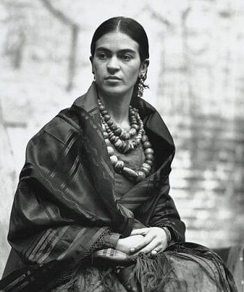

Considerada una de las más grandes artistas de México, Frida Kahlo nació el 6 de julio de 1907 en Coyocoan, Ciudad de México, México. Creció en la casa de la familia, donde más tarde se la denominó Casa Azul o Casa Azul. Su padre es descendiente de alemanes y fotógrafo. Emigró a México donde conoció y se casó con su madre Matilde. Su madre es mitad amerindia y mitad española. Frida Kahlo tiene dos hermanas mayores y una hermana menor.
Frida Kahlo tuvo mala salud en su infancia. Contrajo polio a la edad de 6 años y tuvo que estar postrada en cama durante nueve meses. Esta enfermedad hizo que su pierna y pie derecho se volvieran mucho más delgados que el izquierdo. Cojeó después de recuperarse de la polio. Ella usó faldas largas para cubrir eso por el resto de su vida. Su padre la animó a hacer muchos deportes para ayudarla a recuperarse. Jugaba fútbol, nadaba, e incluso luchaba, lo cual es muy inusual en ese momento para una niña. Mantuvo una relación muy estrecha con su padre durante toda su vida.
Frida Kahlo asistió a la reconocida Escuela Nacional Preparatoria en la Ciudad de México en el año de 1922. Solo habia treinta y cinco alumnas inscritas en esa escuela y pronto se hizo famosa por su franqueza y valentía . En esta escuela conoció por primera vez al famoso muralista mexicano Diego Rivera. Rivera en ese momento estaba trabajando en un mural llamado La Creación en el campus de la escuela. Frida lo miraba a menudo y le dijo a un amigo que algún día se casaría con él.
Ella resultó gravemente herida y tuvo que permanecer en el Hospital de la Cruz Roja en la Ciudad de México durante varias semanas. Después de eso, regresó a casa para recuperarse más. Tuvo que usar yeso de cuerpo completo durante tres meses. Para matar el tiempo y aliviar el dolor, comenzó a pintar y terminó su primer autorretrato al año siguiente. Frida Kahlo dijo una vez: "Me pinto a mí misma porque a menudo estoy sola y soy el sujeto que mejor conozco".. Sus padres la animaron a pintar y le hicieron un caballete especial para que pudiera pintar en la cama. También le regalaron pinceles y cajas de pinturas.
Frida Kahlo se reencontró con Rivera en 1928. Ella le pidió que evaluara su trabajo y él la animó. Losdos pronto comenzaron la relación romántica. A pesar de la objeción de su madre, Frida y Diego Rivera se casaron al año siguiente. Durante sus primeros años como pareja casada, Frida tuvo que mudarse mucho debido al trabajo de Diego. En 1930 vivían en San Francisco, California. Luego se mudaron a la ciudad de Nueva York para la exhibición de obras de arte de Rivera en el Museo de Arte Moderno . Más tarde se mudaron a Detroit mientras Diego Rivera trabajaba para el Instituto de Artes de Detroit.
 En 1932, Kahlo agregó componentes más realistas y surrealistas a su estilo pictórico. En la pintura titulada Hospital Henry Ford (1932) , Frida Kahlo yacía desnuda en una cama de hospital y estaba rodeada de algunas cosas que flotaban, que incluyen un feto, una flor, una pelvis, un caracol, todo conectado por venas. Esta pintura fue una expresión de sus sentimientos acerca de su segundo aborto espontáneo. Es tan personal como sus otros autorretratos.
En 1932, Kahlo agregó componentes más realistas y surrealistas a su estilo pictórico. En la pintura titulada Hospital Henry Ford (1932) , Frida Kahlo yacía desnuda en una cama de hospital y estaba rodeada de algunas cosas que flotaban, que incluyen un feto, una flor, una pelvis, un caracol, todo conectado por venas. Esta pintura fue una expresión de sus sentimientos acerca de su segundo aborto espontáneo. Es tan personal como sus otros autorretratos.
En 1933, Kahlo vivía en la ciudad de Nueva York con su esposo Diego Rivera. Nelson Rockefeller le encargó a Rivera que creara un mural llamado Man at the Crossroadsen en el Centro Rockefeller. Rivera trató de incluir en el cuadro a Vladimir Lenin, quien es un lider comunista. Rockefeller detuvo su trabajo y pintó esa parte. La pareja tuvo que regresar a México después de este incidente. Regresaron y vivieron en San Ángel, México.
El matrimonio de Frida Kahlo y Diego Rivera no siempre fue "feliz". Habían estado manteniendo casas y estudios separados durante todos esos años. Diego tuvo tantas aventuras y una de ellas fue con la hermana de Kahlo, Cristina. Frida Kahlo estaba tan triste que se cortó el pelo largo para mostrar su desesperación por la traición. Anhelo tener hijos, pero no pudo tener uno debido al accidente de autobús.